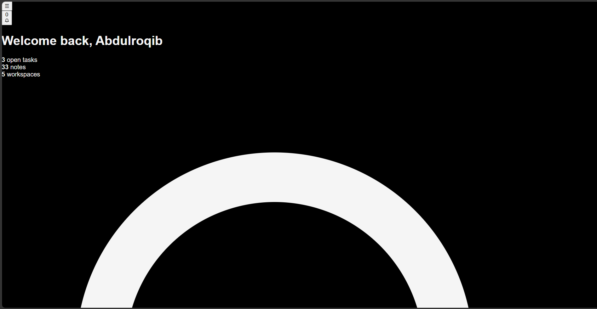
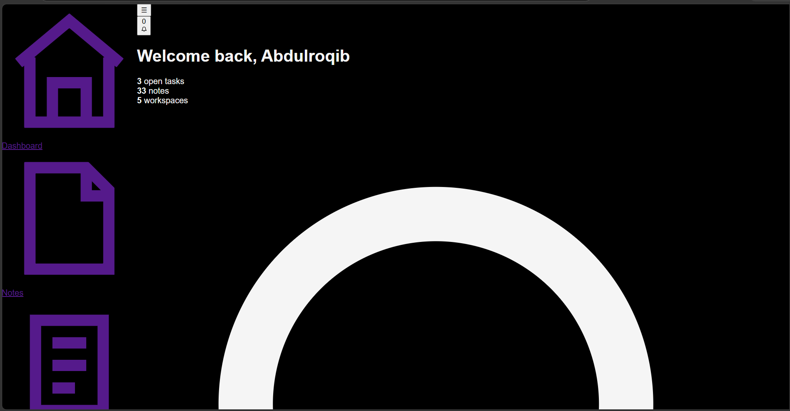
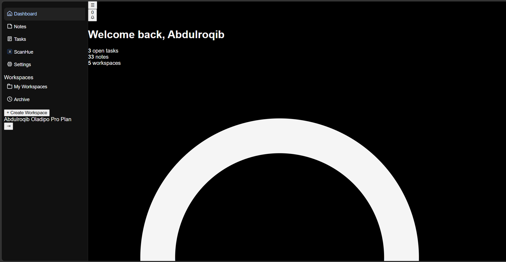
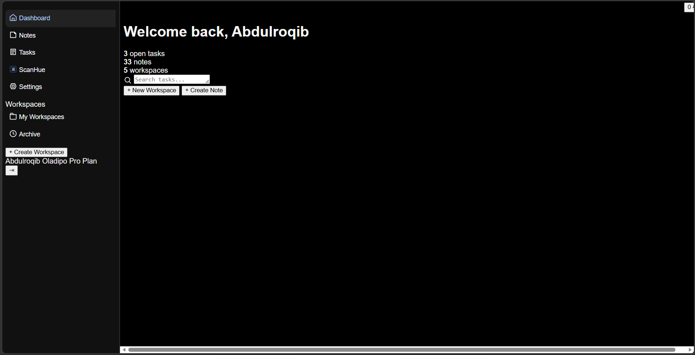
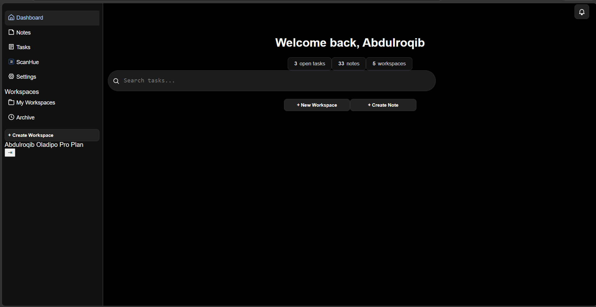
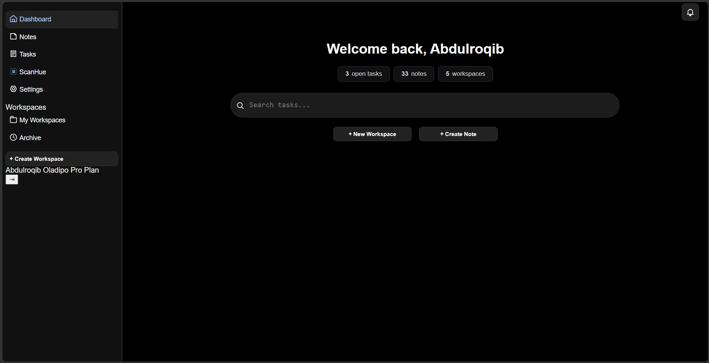
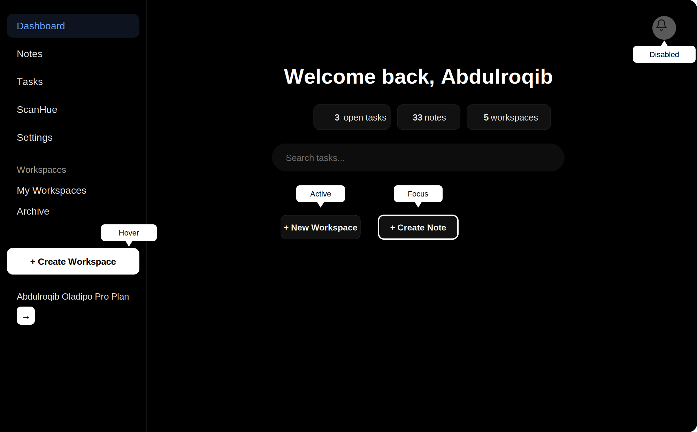
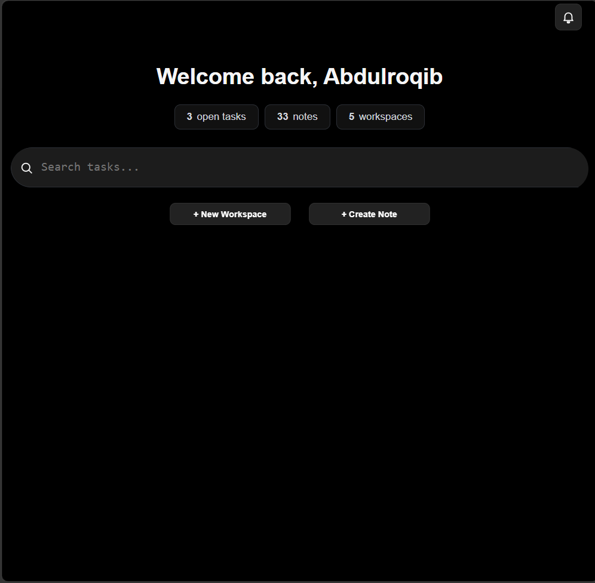

CSS (Cascading Style Sheets) is what makes your favourite websites
look the way they do. It controls the visual appearance of a
webpage, from its layout, colours, and typography to its spacing,
animations, and responsive behaviour.
Modern CSS has become incredibly powerful. It can be used to create
complex layouts, interactive effects, animations, and interfaces
that work across different screen sizes.
In this documentation, you will not just learn what CSS properties
do. You will learn how to use CSS to solve real design problems and
turn a plain HTML structure into a complete interface.
You will also be encouraged to experiment, make your own design
decisions, and use CSS as a tool to express your creativity.
Your First Task
Imagine that you have just joined Scybud as a frontend developer.
You have been given a task: turn an existing HTML structure into a
beautiful, user-friendly dashboard for
LogHue.
The HTML has already been prepared for you. Your job is to use CSS
to transform that structure into the finished interface.
Throughout this documentation, we will work through the design
step by step. You will see the decisions behind the interface,
learn the CSS concepts needed to make those decisions, and apply
them to the project.
By the end, you will have taken a plain HTML document and turned
it into a real interface used by an actual product.
It should have exactly 2 columns on large screens.
It should be responsive.
It should have a left sidebar.
The sidebar navigation links should be stacked vertically.
The user profile should be at the bottom of the sidebar.
The welcome heading should be centered.
The notification bell should be in the top-right corner of the
page.
The 3 statistic cards should be centered below the heading.
The search bar should be wide, rounded, and below the
statistics.
The 2 action buttons should be centered below the search bar.
The layout should use generous spacing and a minimal design.
Buttons, cards, and the search bar should have rounded
corners.
What is CSS?
CSS stands for Cascading Style Sheets. It is the language used to
describe how HTML elements should look and be arranged on a webpage.
While HTML gives a webpage its structure, CSS controls its
presentation. With CSS, you can change colours, sizes, spacing,
positioning, layouts, typography, and much more.
Think of HTML as the structure of a building and CSS as everything
that makes the building look and feel the way it does.
What can CSS do?
Change the colour and appearance of elements.
Control spacing and sizing.
Create layouts using Flexbox and Grid.
Make interfaces responsive.
Create animations and transitions.
Change how elements behave in different states.
In this documentation, you will learn these concepts by using them
to build real interfaces rather than learning them only as isolated
CSS properties.
CSS & HTML
CSS and HTML work together. HTML defines the structure and content
of a webpage, while CSS determines how that structure is presented
to the user.
For example, HTML can tell the browser that a piece of text is a
heading:
<h1>Welcome to Scybud</h1>
CSS can then determine how that heading should look:
h1 {
font-size: 2rem;
text-align: center;
}
The HTML tells the browser what the element is. The
CSS tells the browser how it should look.
This documentation assumes that you already understand the basics of
HTML. If you don't, we recommend completing the
Scybud HTML Documentation
before continuing.
How This Course Works
This is not a collection of CSS properties for you to memorise. You
are going to learn CSS by following the process of building a real
interface.
Throughout the documentation, you will be given problems that a
frontend developer might encounter while designing a webpage. We
will solve those problems one at a time using CSS.
Learn by building
Instead of learning a property first and trying to find a reason to
use it later, you will encounter a problem first and then learn the
CSS concepts that can solve it.
For example, if our sidebar needs to remain visible while the user
scrolls, we will first look at that problem. Then we will learn
about the CSS positioning techniques that can solve it.
Follow the process
Each project will be broken into smaller parts. You will gradually
build the interface from its basic layout to its smaller details.
Understand the design and the requirements.
Identify the problem we need to solve.
Learn the CSS concept needed to solve it.
Apply the concept to the project.
Experiment and see what happens when you change it.
Move on to the next problem.
Make it your own
As you progress, you will be given opportunities to make your own
design decisions. There may be a reference design, but you should
not feel limited to copying it exactly.
Look at different designs, get inspiration, experiment with ideas,
and develop your own taste. The goal is not simply to reproduce
someone else's interface. The goal is to learn how to create your
own.
By the end of the documentation, you will be given a project to
complete on your own using the skills you have learned.
The Design Brief
You have been given a real design task: style the
LogHue
dashboard using the HTML that has already been prepared for you.
Your job is to turn the existing structure into a complete, polished
dashboard interface. You are not being asked to change what the page
contains. You are being asked to decide how it should look and how
the different parts of the interface should work together visually.
The sidebar should remain visible while the main content is being
viewed.
The main content should have clear spacing and visual hierarchy.
The design should work on both desktop and smaller screens.
The different sections should feel like parts of the same
interface.
The final design may not look exactly like the original sketch. That
is intentional. A draft is used to communicate an idea, not
necessarily to define every detail of the final product.
As a designer, you need to know when a design should be adapted,
improved, or changed as you build it. The sketch is your starting
point, but you should always consider the principles of good design
and make decisions that improve the final result.
However, if you are explicitly asked to recreate a design exactly as
it is, then your job is to reproduce it accurately. Even then, never
forget the principles of design behind what you are creating.
Understanding the HTML
Before you start writing CSS, take a moment to understand the HTML
you have been given. You are not starting with an empty file. The
structure of the
LogHue
dashboard has already been built for you, and your job is to turn
that structure into the design from the brief.
You do not need to understand every line of this document yet. Focus
on identifying the major parts of the page and understanding how
they are related to one another.
The <main> contains the main layout of the
dashboard. The <aside> represents the sidebar,
while the <article> contains the main dashboard
content.
Inside the dashboard
The main content is divided into smaller parts. There is a header
containing the menu and notification button, followed by the
dashboard section containing the greeting, statistics, search bar,
and action buttons.
Notice how the HTML already describes what each part of the
interface is. CSS will determine how those parts are positioned,
sized, spaced, and presented to the user.
The complete starter HTML
The two snippets above only showed the shape of the page. Below is
the complete starter HTML for the LogHue dashboard, exactly as it
will be given to you. Use the button to copy it, rather than typing
it out by hand.
Before moving on, get familiar with the class names below. You will
be targeting each of them with CSS throughout this project.
.main wraps the entire dashboard. It holds the
sidebar and the main content side by side.
.sidebar is the left navigation panel, containing the
main links, the workspace links, and the profile section.
.sidebarNav groups a set of sidebar links together.
The sidebar uses two of these, one for the main navigation and one
for workspaces.
.mainContent holds everything to the right of the
sidebar, including the header and the dashboard section.
.contentHeader is the top bar of the main content. It
contains the sidebar toggle button and the notification button.
.dashboard-section wraps the greeting, the
statistics, and the search area.
.dashboardStats holds the three statistic cards
showing open tasks, notes, and workspaces.
.searchBarContainer wraps the search input and the
action buttons beneath it.
.quickActionsContainer holds the two action buttons,
New Workspace and Create Note.
Set up your project
Click the Copy HTML button above.
Create a new file on your computer named index.html.
Paste the copied HTML into that file and save it.
Open index.html in your browser.
When you open the file, the page will look mostly unstyled. The
headings, buttons, and text will appear, but stacked plainly with no
layout, colour, or spacing. This is expected. The HTML only
describes what the page contains. You have not written any CSS yet,
so the browser is rendering everything with its own default styles.
Before you continue
Look through the complete HTML yourself. Try to identify the
sidebar, header, notification button, greeting, statistics, search
area, and action buttons. You will be styling these elements
throughout the project.
Your First CSS
You have the HTML, and you know what the finished dashboard should
look like. Now it is time to start turning that structure into the
design.
Start by creating a <style> element inside the
<head> of your HTML document. This is where you
will write the CSS for this project.
<style>
/* Your CSS goes here */
</style>
Start with the page
Look at the finished design. The entire page has a black background,
light text, and no default browser spacing around the page.
Before styling the sidebar or dashboard, handle these basic
properties first.
The body is the starting point for the visible page.
Removing its default margin allows the interface to reach the edges
of the browser window.
What did you just write?
CSS rules follow a simple pattern: select something, then describe
how it should look.
body {
background: #000;
color: #f5f5f5;
}
body is the selector. It tells the
browser which HTML element the rule should affect.
background and color are
properties. Their values tell the browser what
those properties should be.
The braces { } contain the declarations that make up
the rule.
Now look at the result
At this point, the dashboard will not look finished. That is
expected. You have only established the foundation of the page.
The sidebar is still in the wrong position, the dashboard content
has not been arranged, and the buttons and search bar have not been
styled. Each of those is a separate problem that you will solve as
you continue.
Why?
Do not try to write all the CSS at once. Start with the broad
structure of the page, then work your way toward individual
components. This makes it easier to understand what each rule is
doing and why it is needed.
Checkpoint: Step 1, Page Foundation
Before moving on, compare your page to the screenshot below. At this
stage the layout is still unstyled, but the background, text colour,
and font should already match.

Step 1, Page Foundation: dark background, light text, and base
font applied. Layout is not yet arranged.
Note: You might see the home icon first. Dont worry, it didnt show
here becuase it was commented out for better screenshot coverage.
The Cascade
So far, we have given our page a basic foundation. But CSS becomes
more interesting when more than one rule can affect the same
element.
The word cascade describes how the browser decides
which CSS rule should win when multiple rules apply to the same
element.
When Rules Conflict
Imagine we want all text on the page to be light, but we also want
the dashboard heading to have a different color.
Both rules set the color property, but they target
different levels of the page. The more specific selector
.dashboard-section h1 can override the general
body rule for that heading.
Specificity Matters
CSS does not simply use the last rule it sees. The browser considers
several things when deciding which declaration should be applied,
including the selector's specificity.
Then change the selectors and see which rule wins. The goal is not
to memorize a list of rules. Instead, learn to recognize when CSS
rules compete with each other and understand why the browser chooses
one.
Checkpoint: Understanding the Cascade
At this point, your page should still look the same as the previous
checkpoint. The important change is understanding how CSS decides
which styles should be applied when rules overlap.
Cascade checkpoint: the page does not need a new visual change
here. You are learning how CSS decides which rule takes effect.
Review Questions
What does the cascade determine?
What happens when two CSS rules set the same property?
Why is .dashboard-section h1 more specific than
h1?
What happens when you remove the more specific rule?
Why is understanding the cascade important as a stylesheet becomes
larger?
Page Layout
Our page has a problem. The HTML contains a sidebar and a main
content area, but CSS has not told the browser where they should go.
Right now, the sidebar and the main content appear one after
another. We want the sidebar on the left and the dashboard content
beside it.
Creating the Two-Column Layout
The .main element contains both the sidebar and the
main content, so it is the element we need to control.
CSS Grid is useful here because we can divide the page into columns:
one for the sidebar and one for everything else.
display: grid tells the browser that the children of
.main should be arranged using the CSS Grid layout
system.
grid-template-columns
This property defines how wide each column should be.
grid-template-columns: 260px 1fr;
The first column is 260px wide, which gives our sidebar
a fixed width.
The second column uses 1fr. The fr unit
means a fraction of the available space, so the main content takes
the remaining width.
min-height: 100vh
100vh represents the height of the browser's viewport.
Setting the minimum height to 100vh makes the layout
fill at least the entire screen.
Checkpoint: Step 2, Page Layout
Your sidebar and main content should now appear beside each other.
The sidebar has a fixed width, while the main content fills the
remaining space.

Step 2, Page Layout: the sidebar and main content now sit beside
each other.
Experiment
Change 260px to another value. What happens when you
make the sidebar wider or narrower?
You can also temporarily replace 1fr with another value
and observe how the available space changes.
Review Questions
What does display: grid do?
What does 260px control?
What does 1fr mean?
Why are we applying the grid to .main?
What does 100vh represent?
The Sidebar
The page is now divided into two columns, but the sidebar still
needs to be styled. Look at the design again. The navigation should
feel like part of the interface rather than a collection of default
links.
Before changing individual links and buttons, we first need to give
the sidebar its visual foundation: a background, a border, and some
space around its contents.
Giving the Sidebar a Background
The sidebar uses the class .sidebar, so we can target
it directly.
padding creates space between an element's content and
its edges. Here, it gives the navigation some breathing room.
Styling the Navigation Links
Our HTML already gives each navigation item a useful structure: an
<a> element containing an icon and its label. We
can use CSS to turn those links into full-width navigation items.
The browser provides default styling for many elements. We don't
want the navigation items to look like default links, so we remove
the underline and make the background transparent.
This makes each navigation item use the available width of the
sidebar. This is important because the user should be able to click
the navigation area, not just the text.
Add Space and Shape
padding: 8px;
border-radius: 8px;
padding gives the content room around it, while
border-radius rounds the corners of the navigation
item.
Arrange the Icon and Text
Each navigation item contains an icon and a text label. Flexbox lets
us place them beside each other and align them properly.
display: flex;
align-items: center;
gap: 4px;
display: flex places the icon and text in a row.
align-items: center keeps them vertically aligned,
while gap creates space between them.
The Active Navigation Item
The current page needs to be distinguishable from the other
navigation items. The Dashboard link already has the
active class in the HTML.
The navigation can therefore grow with its contents while still
being able to scroll when there is not enough vertical space.
Checkpoint: Step 3, The Sidebar
Compare your result with the screenshot below. The sidebar should
now have a dark surface, properly spaced navigation items, aligned
icons, and a visible active Dashboard item.

Step 3, The Sidebar: navigation items are now styled, aligned, and
spaced inside the sidebar.
Experiment
Change the gap value. What happens when the icons move
farther away from their labels?
Then change the padding and border-radius.
Try to make the navigation items feel more compact or more spacious.
Review Questions
Why do we use width: 100% on the navigation items?
What does display: flex do here?
What is the purpose of gap?
Why does the Dashboard item have the active class?
What does overflow: auto allow the navigation area to
do?
Main Content
The sidebar now has its own structure and styling. Next, we need to
style the main content area of the dashboard.
The HTML already gives us everything we need: a header, a dashboard
greeting, statistics, a search area, and action buttons. We will
style these parts one at a time.
Styling the Main Content Area
The .mainContent element contains everything to the
right of the sidebar. First, give it a subtle separating border,
some internal spacing, and scrolling behaviour.
The quick actions are centered with Flexbox and separated with
gap.
.actionBtn is a reusable button style. The more
specific .quickActionsContainer .actionBtn selector
changes the dashboard action buttons to a fixed width of
170px.
Checkpoint: Step 4, Main Content
Your main content should now contain a structured header, centered
dashboard greeting, statistic cards, search field, and quick-action
buttons.

Step 4, Main Content: the dashboard now has its main content
structure, statistics, search area, and action buttons.
Experiment
Change the max-width of the statistics and search
areas. Observe how their size changes while the rest of the
dashboard remains centered.
Then change the gap values in the Flexbox containers.
See how the spacing between the dashboard elements changes.
Review Questions
What does display: flex do in the dashboard section?
Why does .dashboard-section use
flex-direction: column?
What does flex-wrap: wrap allow the statistic cards
to do?
Why is .searchInputWrapper positioned relatively?
Why does the search icon use position: absolute?
Why does .quickActionsContainer .actionBtn use a more
specific selector?
Containers
The dashboard is made up of several containers. Containers help
control how much space content can use and keep the page from
becoming difficult to read on larger screens.
We already have containers in our HTML. Instead of creating a new
.container class, we can style the containers that are
already part of the dashboard.
width: 100% allows the section to use the available
space. However, on a very large screen, using all of that space
could make the content unnecessarily wide.
max-width: 1200px sets a limit. The section can become
smaller when there is less available space, but it will not grow
beyond 1200px.
margin: 10px auto adds vertical spacing and centers the
container horizontally when its width is limited.
Limiting Nested Containers
Containers can also be nested inside other containers. This lets us
give different parts of the dashboard different width limits.
Notice that each container can have its own max-width.
The statistics and search input are narrower than the overall
dashboard.
This creates a visual hierarchy: the dashboard can occupy a large
area, while important content such as statistics and search remains
at a comfortable reading width.
Understanding width and max-width
These two properties work together:
width: 100% says the container can use the available
width.
On a small screen, the wrapper can shrink to fit the available
space. On a large screen, it stops growing once it reaches
800px.
Checkpoint: Step 5, Containers
Your dashboard should now have controlled content widths instead of
allowing every section to stretch indefinitely across the screen.

Step 5, Containers: the dashboard uses width limits to keep its
content organized and readable.
Experiment
Change max-width: 800px on
.dashboardStats to 500px. Observe how the
statistics area changes.
Then remove max-width completely. Compare the result on
a large screen.
Finally, change max-width: 1200px on
.dashboard-section to a smaller value and observe how
all of the dashboard content is affected.
Review Questions
What is the difference between width and
max-width?
Why use width: 100% together with
max-width?
What does margin: 0 auto do when a container has a
limited width?
Why might the search input need a smaller
max-width than the dashboard section?
What happens when you remove the max-width from a
container?
Spacing
Your page now has a layout and containers, but the elements still
need room to breathe. Spacing controls the distance between elements
and determines whether a page feels cramped or comfortable.
Padding vs. Margin
CSS gives you two main ways to create space:
padding and margin.
Padding creates space inside an element, between
its content and its border.
Margin creates space outside an element,
separating it from other elements.
Adding Space Inside Elements
Start by giving the dashboard cards some internal space:
.statCard {
padding: 8px 16px;
}
The first value controls the top and bottom padding, while the
second controls the left and right padding.
Separating Elements
Use margin when you need to separate one element from
another:
This keeps the spacing between items consistent without adding
margins to each individual element.
Build the Spacing
Now adjust the spacing throughout the dashboard. Give the content
room around its edges, add comfortable spacing between the
statistics cards, and separate the search area from the other
content.
Do not try to make everything evenly spaced. Different elements can
need different amounts of space depending on their role.
Checkpoint: Step 6, Spacing
Your dashboard should now have comfortable spacing between its
sections, controls, and content. Compare your result with the
checkpoint below.

Step 6, Spacing: The dashboard now has consistent and comfortable
spacing between its elements.
Fonts
Text is one of the most important parts of a web page. CSS allows
you to control which font is used, how large it appears, and how it
is displayed.
You have already used a font in the dashboard:
body {
font-family: Arial, Helvetica, sans-serif;
}
The font-family property tells the browser which font
to use. The browser tries the fonts from left to right and uses the
first available one.
Common values include 400 for normal text,
500 for medium text, 600 for semi-bold,
and 700 for bold.
Changing the Font
You can use another font by changing the
font-family value.
body {
font-family: Georgia, serif;
}
You can also use a custom web font by loading it with
@font-face or importing it from a font provider.
Reference
For a refresher on how the dashboard's font was introduced, return
to
Your First CSS.
Headings
Headings help organize your content and make it easier to
understand. HTML provides six heading levels, from
h1 to h6.
CSS lets you control how each heading looks without changing its
meaning.
Styling a Heading
You can target a specific heading and change its size, weight,
spacing, or other visual properties.
h1 {
font-size: 2rem;
font-weight: 700;
}
You can also target a heading based on the component it belongs to.
This is useful when different parts of your page need different
heading styles.
.dashboardHeader h1 {
font-size: 1.875rem;
}
Choose the Right Heading
Use headings according to the structure of your content, not simply
because you want text to look bigger or smaller. CSS should control
the appearance while HTML controls the document structure.
Reference
You already styled the dashboard's main heading earlier in
Main Content.
Line Height
The line-height property controls the amount of
vertical space between lines of text. Increasing it can make
paragraphs easier to read, while a smaller value can make text feel
more compact.
Setting Line Height
You can use a number, length, or percentage. A unitless number is
often useful because it scales with the element's font size.
p {
line-height: 1.6;
}
For example, a value of 1.6 means the line height is
1.6 times the element's font size.
Different Elements, Different Spacing
Headings usually need tighter line spacing, while paragraphs can
benefit from more space between lines.
h1 {
line-height: 1.2;
}
p {
line-height: 1.6;
}
Reference
The heading used in the dashboard was styled earlier in
Main Content.
Text Hierarchy
Not all text on a page should look equally important. Text hierarchy
helps users quickly understand what is important, what supports it,
and what is secondary information.
You can create hierarchy by changing properties such as
font-size, font-weight, and
line-height.
Creating Hierarchy
A large, bold heading can draw attention to the main idea, while
smaller and lighter text can provide supporting information.
Similar types of content should generally use similar styles. This
makes the interface easier to scan and prevents every piece of text
from competing for attention.
Reference
The dashboard heading was styled earlier in
Main Content, while the text inside the
statistic cards was styled in the same section.
Display
The display property controls how an element behaves in
the layout. It is one of the most important CSS properties for
arranging elements on a page.
Block Elements
A block element starts on a new line and normally takes up the
available width.
.dashboard-section {
display: block;
}
Inline Elements
An inline element stays within the same line as surrounding content.
span {
display: inline;
}
Flex
Setting display: flex turns an element into a flex
container. Its children can then be arranged and aligned using
Flexbox properties.
Use the display type that matches the layout you are trying to
create. Block and inline are useful for normal document flow, while
Flexbox and Grid give you more control over arranging elements.
Reference
The dashboard's main layout already uses Grid. You can see how it
was introduced in Page Layout.
Flexbox
Flexbox is a CSS layout system designed to arrange elements in a row
or column. It makes it easier to control the direction, alignment,
spacing, and size of elements inside a container.
Creating a Flex Container
Start by setting display: flex on the parent element.
.quickActionsContainer {
display: flex;
}
Direction
By default, Flexbox places items in a row. You can change this with
flex-direction.
Use gap to create consistent space between flex items.
.container {
display: flex;
gap: 16px;
}
Reference
Flexbox is already used throughout the dashboard. For example,
.quickActionsContainer uses Flexbox to arrange the
action buttons, while .headerRight uses it to align the
controls in the header.
You can also see Flexbox being used in the sidebar links in
The Sidebar.
Grid
CSS Grid is a layout system designed for arranging elements in rows
and columns. It is especially useful when you need control over the
overall structure of a page.
Creating a Grid
Start by setting display: grid on the parent element.
.container {
display: grid;
}
Creating Columns
Use grid-template-columns to define the columns in your
grid.
The dashboard uses Grid for its main page structure. The
.main element creates a 260px sidebar column and gives
the remaining space to the main content.
position: fixed positions an element relative to the
viewport. It stays in place when the page is scrolled.
.sidebar {
position: fixed;
top: 0;
left: 0;
}
Sticky Positioning
position: sticky behaves like a normally positioned
element until it reaches a specified position while scrolling.
.contentHeader {
position: sticky;
top: 0;
}
Reference
The dashboard already uses positioning for its header and search
icon. You can see these examples in
Main Content.
Cards
Cards are commonly used to group related information into separate
visual containers. They can make dashboards easier to scan by giving
each piece of information its own space.
The dashboard already uses cards for its statistics. Each statistic
is placed inside an element with the statCard class.
Creating a Card
A simple card can be created by giving it a background, border,
padding, and rounded corners.
Navigation helps users move between different parts of a website or
application. CSS can make navigation links easier to identify,
organize, and interact with.
Styling Navigation Links
You can style navigation links like any other element. Change their
color, spacing, background, and other properties to match the
design.
The dashboard already uses interactive states for its action
buttons. The hover and active styles were introduced in
Buttons.

Step 7, States: Interactive elements respond visually to user
actions.
This image was AI generated and might not be accurate.
Responsive Thinking
A web page can be viewed on many different screen sizes. A layout
that looks good on a large desktop screen may not work well on a
phone. Responsive design means creating layouts that adapt to the
available space.
Think About the Available Space
Before writing responsive CSS, look at how your elements behave when
the available space becomes smaller. Ask yourself what should
shrink, what should wrap, and what may need to move to another
position.
Flexible vs. Fixed Sizes
Fixed sizes can be useful when an element needs a specific size, but
relying on them everywhere can make a layout difficult to use on
smaller screens.
Here, flex-wrap allows the cards to move onto another
line when there is no longer enough horizontal space.
Reference
The dashboard already uses flexible sizing and wrapping in
Containers and
Flexbox.
Media Queries
Media queries allow you to apply different CSS rules depending on
the characteristics of the device or viewport. They are commonly
used to adapt a layout for smaller screens.
Changing the Layout on Mobile
Our dashboard uses a two-column Grid layout on larger screens. On a
smaller screen, the sidebar takes up too much space, so we can
change the Grid to a single column and hide the sidebar.
The @media rule tells the browser to apply these styles
only when the viewport is 768 pixels wide or smaller.
What Happens to the Sidebar?
The sidebar is hidden on mobile because there is not enough
horizontal space for both the sidebar and the main content.
However, hiding the sidebar also hides its navigation links. Making
the navigation accessible through a mobile menu would require
JavaScript to open and close the sidebar.
JavaScript is not covered in this CSS documentation, so we will only
handle the responsive layout with CSS.
Checkpoint: Mobile Layout
Resize the page to a mobile-sized viewport and compare your result
with the checkpoint below. The sidebar should be hidden and the main
content should use the available width.

Mobile Layout: The sidebar is hidden and the main content expands
to use the available screen width.
Reference
The original two-column Grid layout was created in
Page Layout.
Mobile Layouts
A responsive layout should not only fit on a smaller screen. Its
elements should also remain readable and usable when the available
space changes.
Changing the Grid
On larger screens, the dashboard uses two Grid columns: one for the
sidebar and one for the main content. On mobile, the layout changes
to a single column.
Elements that have a fixed width on larger screens may need to
become flexible on smaller screens. Using width: 100%,
max-width, wrapping, and flexible Grid or Flexbox
layouts can help content fit the available space.
In our example, the sidebar is hidden on mobile. A real application
would normally provide another way to access those navigation links,
such as a mobile menu.
Creating an interactive mobile menu requires JavaScript to open and
close the navigation. JavaScript is outside the scope of this CSS
documentation, so we will only handle the layout change with CSS.
Reference
The mobile Grid change was introduced in
Media Queries.
Responsive Components
Responsive design is not only about changing the overall page
layout. Individual components also need to remain usable when the
available space changes.
Components Should Adapt
A component should be able to use the space available to it instead
of assuming that the screen will always have the same width.
Responsive components often use several CSS techniques together. In
this dashboard, flexible widths and wrapping are used alongside the
media query that changes the main Grid layout on smaller screens.
The media query controls the major layout change, while the
components themselves use flexible sizing and wrapping to adapt
within that layout.
Reference
The main responsive layout is covered in
Media Queries, and the behavior of the
dashboard on smaller screens is explained in
Mobile Layouts.
Colors
Color affects how a website feels and helps users understand what is
important. A good color system should be consistent rather than
using a different color for every element.
Scybud's Dark Foundation
Pure black is a signature of Scybud-developed interfaces. Using
#000 as the main background creates a strong, minimal
foundation that keeps the interface focused on the content and gives
Scybud products a recognizable visual identity.
html,
body {
background: #000;
color: #f5f5f5;
}
From there, slightly lighter shades can be used to separate elements
without breaking the dark visual system.
The main dark color foundation was introduced in
Your First CSS. The sidebar and
component colors were then introduced throughout
The Sidebar and
Main Content.
Borders
Borders can separate elements, define their boundaries, and add
structure to an interface. They can also be used subtly so that
elements are separated without feeling visually heavy.
Adding a Border
The border property lets you define the width, style,
and color of a border.
.statCard {
border: 1px solid #2c2f36;
}
Rounded Borders
Use border-radius to round the corners of an element.
.statCard {
border-radius: 8px;
}
Using Subtle Borders
In a dark interface, a bright border can become distracting. Using a
darker shade creates separation while keeping the interface calm.
The box-shadow property can create depth by making an
element appear to sit above or below other elements. Shadows are
commonly used around cards, buttons, menus, and other components.
Creating a Shadow
A basic shadow can be created by defining its horizontal offset,
vertical offset, blur, and color.
Shadows do not always make an element appear more separated. On a
pure black background, a typical dark shadow has very little visible
effect because there is already almost no darker color to display.
A lighter or gray shadow can create a visible glow-like effect, but
that changes the visual character of the component. For this reason,
shadows were intentionally not used in the dashboard. The dashboard
instead relies on backgrounds, borders, and spacing to separate its
elements.
Shadows in ScyLearn
Shadows are still useful when the design calls for them. For
example, shadows are used on the ScyLearn website's home page to
create depth and visual separation.
Reference
Compare the use of shadows on the
Colors and
Borders sections with the dashboard. The
dashboard uses borders and different background shades instead of
shadows to create separation.
Transitions
Transitions make changes between CSS states happen smoothly instead
of changing instantly. They are especially useful for interactive
elements such as buttons and navigation links.
Adding a Transition
The transition property tells the browser which changes
should happen gradually and how long they should take.
.actionBtn {
transition: 0.2s;
}
Now, when another state changes a property such as the background or
text color, the change happens over 0.2 seconds.
Combining Transitions with States
Transitions are commonly used together with pseudo-classes such as
:hover.
CSS variables allow you to store values that can be reused
throughout your stylesheet. They are useful when the same colors,
spacing values, or other properties are used in multiple places.
Creating a Variable
CSS variables are usually defined inside :root so they
can be accessed throughout the page.
Variables make it easier to keep a design consistent and change
values later. Instead of finding every occurrence of a color and
changing it individually, you can change the variable once.
:root {
--surface: #111;
}
Every element using var(--surface) will then use the
updated value.
Reference
The dashboard uses repeated values for its dark backgrounds,
borders, spacing, and text colors. These are good candidates for CSS
variables when developing a larger project.
For the spacing values already used in the project, see
Spacing.
Variables in Scybud UI
Scybud UI uses CSS variables to define shared design values such as
colors, spacing, typography, and other interface properties. This
makes it possible for Scybud-developed products to share a similar
visual language without every project having to define the same
values from scratch.
When Scybud-developed interfaces use the same variables and design
values, different products can have their own layouts and components
while still feeling like they belong to the same ecosystem. This
makes development faster and keeps the design consistent projects.
This is one of the ideas behind
Scybud UI: creating reusable
design foundations that can be shared across Scybud projects.
As your CSS grows, you will often find yourself styling the same
type of element more than once. Instead of writing the same CSS
repeatedly, you can create reusable styles and apply them wherever
they are needed.
Why Reuse Styles?
Reusable styles make your CSS easier to maintain and help keep your
interface consistent. If several elements should look the same, they
can share the same class instead of each having its own separate
rules.
For example, the dashboard uses the .actionBtn class
for buttons that share the same basic appearance:
Both buttons can share the same foundation while still having their
own content or additional classes when needed.
Combining Reusable Styles
A reusable class does not mean every element must look exactly the
same. You can combine a shared class with a more specific class to
change only what is different.
The actionBtn class provides the shared button styling,
while notificationBtn can add styles specific to the
notification button.
You can also use a more specific selector when several elements
share a class but need a different layout in one particular area.
The dashboard uses this approach for its quick actions:
The buttons keep the reusable .actionBtn foundation
while the quick-action container changes how those buttons behave in
that section.
Reusable Styles Across Scybud
Reusable styles become even more useful when building multiple
products. Shared classes, variables, and design values can create a
consistent foundation across Scybud-developed interfaces while
allowing each product to have its own components and layout.
Again,
Scybud UI reuses this idea:
reusable design foundations can be shared instead of recreated for
every project.
Organizing CSS
As a project grows, having reusable styles is useful, but you also
need a clear way to organize those styles. Well-organized CSS makes
it easier to find, understand, and update the rules you have already
written.
Group Related Styles
Keep styles that belong to the same part of the interface together.
For example, sidebar styles can be kept together instead of being
scattered throughout the stylesheet.
This makes it easier to understand how the sidebar itself, its
links, and its active state are connected.
Keep a Clear Order
A stylesheet can become difficult to work with when rules are placed
randomly. A useful approach is to move through the interface in a
logical order: start with the page foundation, then layout,
components, states, and responsive rules.
For example, the dashboard CSS can move from the main page layout to
the sidebar, main content, dashboard sections, cards, search, and
buttons. Related rules stay close together so you can find them
quickly when making changes.
Organizing Larger Projects
As a project becomes larger, you can separate your CSS into
different files based on their purpose. For example:
The exact structure can change depending on the project. The
important part is that you can quickly identify where a particular
style belongs.
Good CSS organization is not about following one perfect structure.
It is about making your stylesheet predictable, reusable, and easy
to maintain as the project grows.
Build the Full Interface
[Project introduction.]
[PROJECT PREVIEW]
Starter Files
[Link to HTML / repository / starter files.]
Instructions
[Instruction]
[Instruction]
[Instruction]
Design Challenge
[Introduce the challenge.]
[CHALLENGE SCREENSHOT / REFERENCE]
Design Instructions
[Requirement]
[Requirement]
[Requirement]
Starter HTML
Get Inspired
[Explain the gallery/inspiration philosophy.]
[DESIGN GALLERY]
Submit Your Work
[Submission instructions.]
Include
Name
Email
Repository URL
Live demo URL
What you changed
[Explain that selected designs may potentially be considered for use
in Scybud products.]